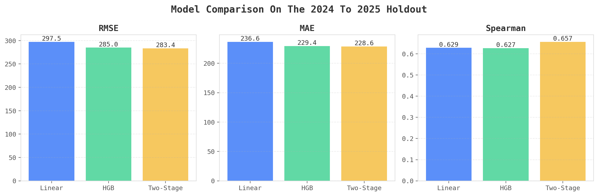
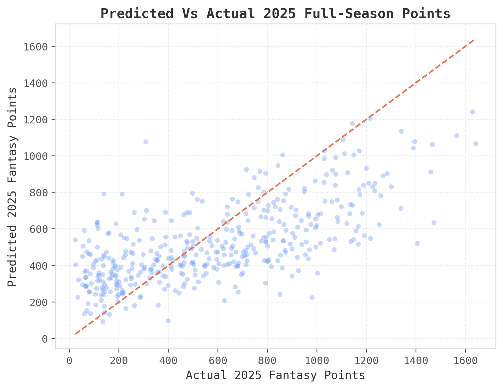
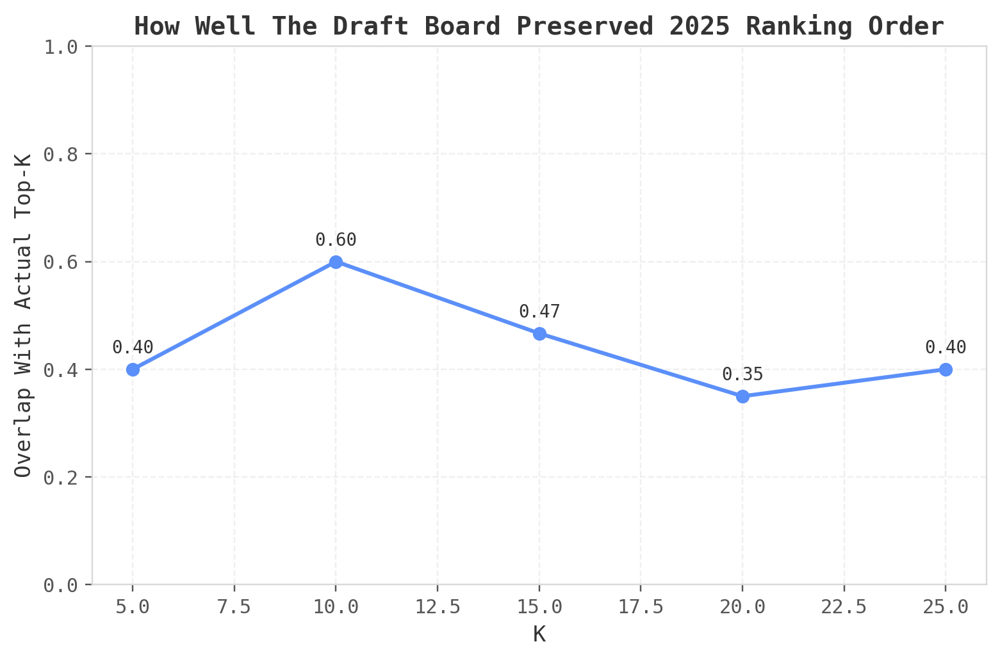
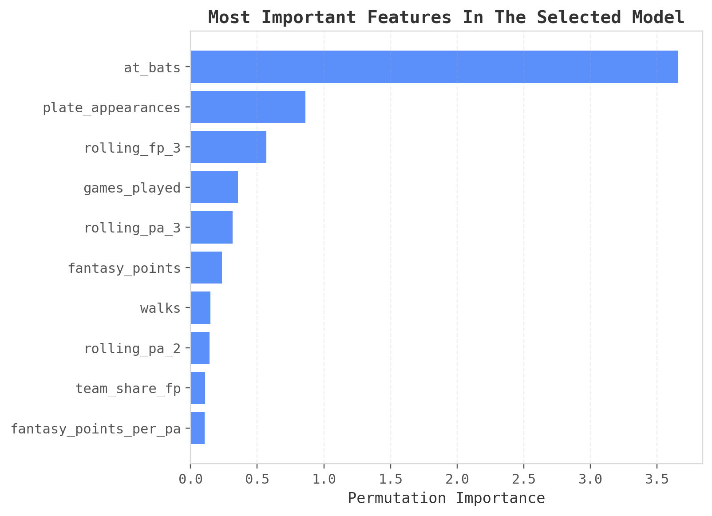
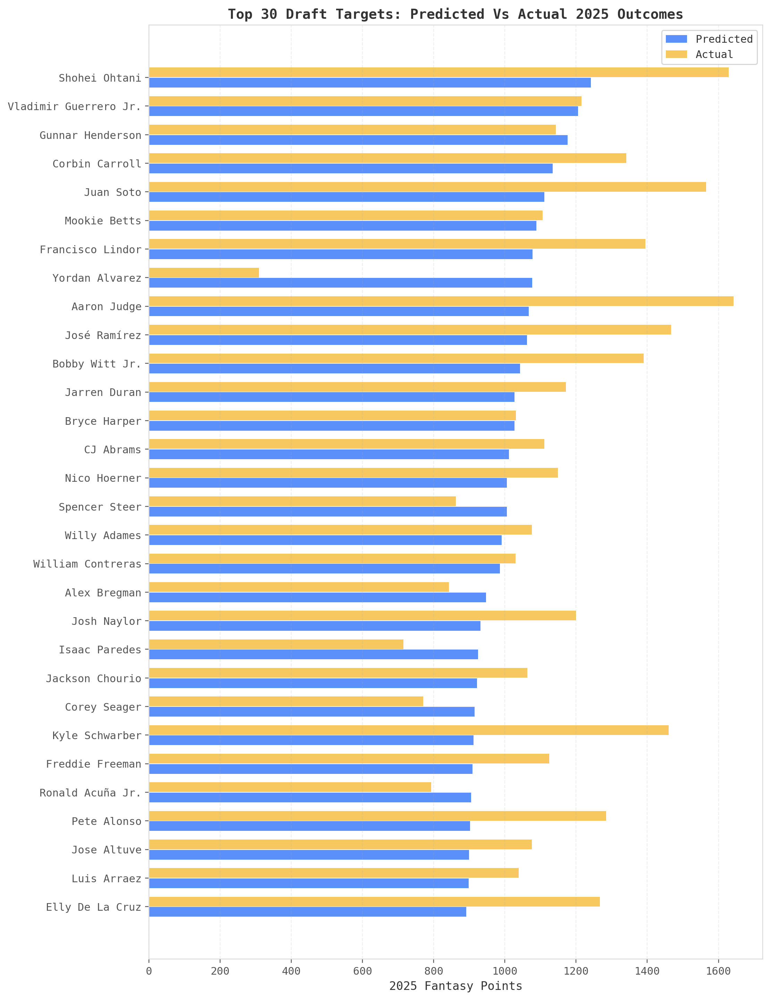
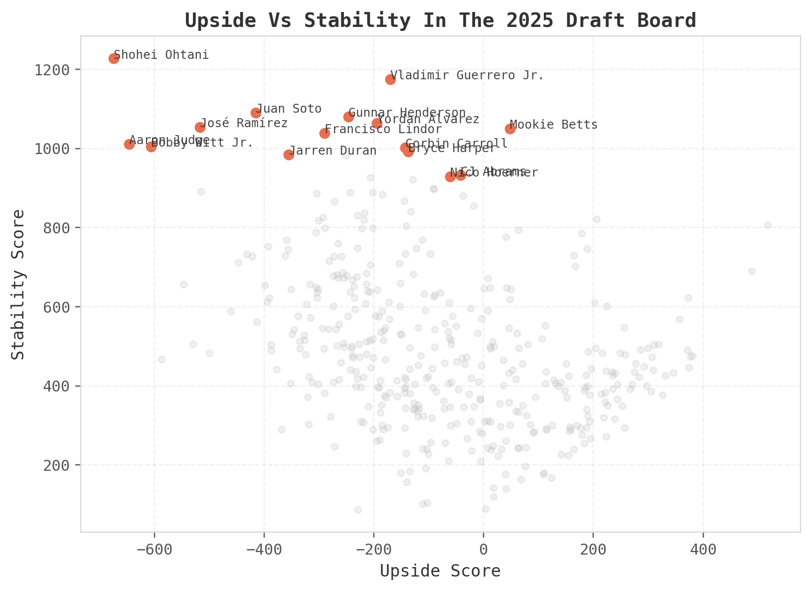
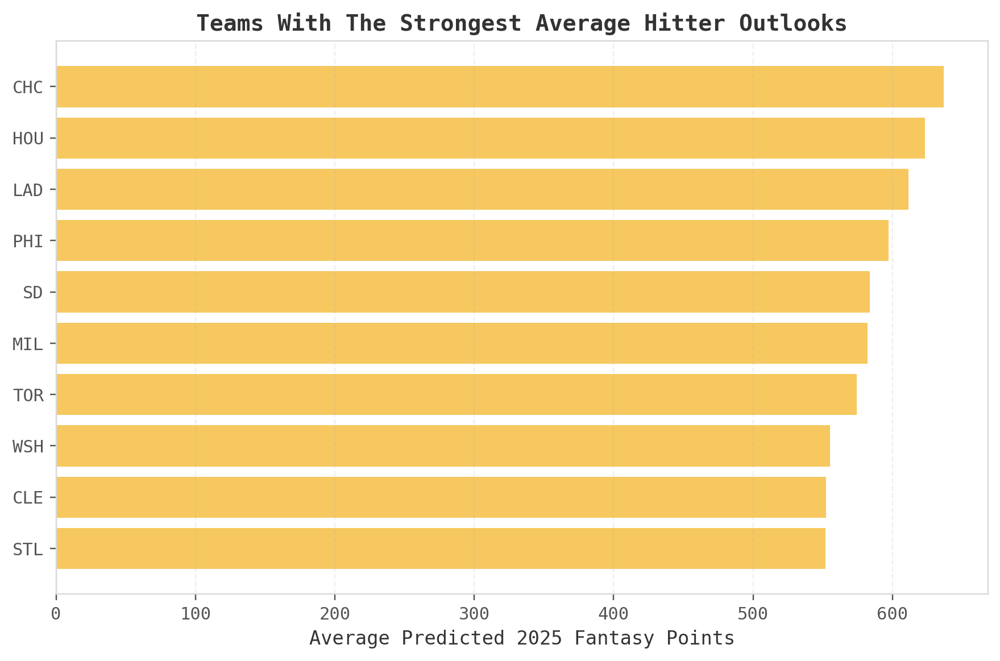

MLB Fantasy Sports Project: Preseason 2025 Hitter Value Forecasting
This project builds a preseason MLB hitter value model using public season-level data from 2018 through 2025. Could we use prior-season trend features to produce a optimal draft board for the 2025 fantasy season?
Main result: On the held-out 2024->2025 test, the model reached RMSE 283.4, MAE 228.6, and Spearman 0.657. More importantly for a draft product, the board recovered 60% of the actual top 10 hitters and 43% of the actual top 30 hitters compared to the actual top 10 and top 30 hitters in 2025.
I have been in love with baseball since I was a kid. I have even played in the varsity baseball team and performed in a national game in high school. This is a personal leisure project for me to explore the intersection of baseball and mathematics. As fantasy sports become more popular in recent years, I have been curious on how could these fairly simple models perform in fantasy sports. If the model is able to predict the future performance of a player, it could be used to help the fantasy sports players to make better decisions. This project is intentionally framed only as a case study. The point is to show that it produces signals that are interpretable, measurable, and useful to support product ideas, while also making its blind spots obvious.
Introduction
This project is trying to understand a question: before a MLB fantasy season starts, which hitters look like strong draft targets in the upcoming season?
The goal is not to claim the most optimal model performance. The goal is to understand and learn an workflow that utilzes MLB data to do feature engineering, model comparison, recommendation logic, and then interpretate the results that is useful for fantasy sports players.
Methods
The modeling unit is a player-season pair. Features come from season t, and the target is full-season fantasy points in season t+1. Training uses historical pairs up to 2023->2024, while the testing set is 2024->2025. The method is intentionally to be simple as this is only a case study. Each hitter-season represents one observation. The model sees only information that would have been available before the next season starts, then tries to forecast the next season's total. The final evaluation is a true 2024->2025 holdout, which means the reported results come from forecasting a future season from past seasons.
Data
The project ingests public MLB hitting statistics from the MLB Stats API for seasons 2018 through 2025. After normalization, it computes a fantasy-style scoring target, rate stats such as walk rate, strikeout rate, ISO, and fantasy points per plate appearance, then builds lagged rolling features over prior seasons. The table below summarizes the dataset used in this run. The most important number is the final row count of model-ready season pairs, because that is the actual supervised-learning dataset after enforcing consecutive-season targets.
Technical Implementation
The project is implemented in Python with pandas and NumPy for data work, scikit-learn for baseline and models, Matplotlib for beautiful figures, and FastAPI for a lightweight serving layer. The preoject is organized into separate modules for ingestion, cleaning, feature engineering, training, evaluation, recommendations, summaries, and API services.
Three modeling approaches are compared: a linear baseline, a single-stage gradient-boosted tree model, and the two-stage model, which predicts next-season plate appearances and next-season fantasy points per plate appearance separately. The selection logic emphasizes rank quality as well as error because the product goal is a draft board, not only point estimation.
Dataset Summary
| Metric | Value |
|---|---|
| Raw player-season rows | 4,239 |
| Model-ready season pairs | 2,825 |
| Unique hitters | 868 |
| Distinct team labels | 31 |
| Raw season coverage | 2018 to 2025 |
| Modeled season pairs | 2018->2019 through 2024->2025 |
Feature Engineering
The features are intentionally practical. They include prior raw totals, OPS, ISO, games played, plate appearances, rolling two- and three-season averages, volatility estimates, prior team share, and a trend delta that measures whether recent fantasy production per plate appearance is improving or cooling. This setup keeps the feature set interpretable while still capturing the main dynamics a fantasy prediction would care about.
Results
The final board is led by Shohei Ohtani, Vladimir Guerrero Jr., Gunnar Henderson, Corbin Carroll, Juan Soto. Feature importance shows that this is primarily a skill-and-opportunity model: prior fantasy output, OPS/SLG, and plate-appearance stability dominate.
Model Performance
This table compares three model families on the 2024->2025 test. The takeaway is that a two-stage structure, which separates projected playing time from per-appearance production, behaves more like a real baseball projection and improves the ranking story without requiring an deep model.
| model | rmse | mae | r2 | spearman |
|---|---|---|---|---|
| Linear Regression | 297.463 | 236.569 | 0.366 | 0.629 |
| Histogram Gradient Boosting (HGB) | 284.959 | 229.359 | 0.418 | 0.627 |
| Two-Stage Ridge + HGB | 283.417 | 228.581 | 0.424 | 0.657 |

The scatter plot makes the story easier to see visually. The model captures the broad structure of hitter value, especially at the upper end, but it still compresses some extreme outcomes. That is consistent with a preseason model that understands talent and opportunity reasonably well but does not yet incorporate enough information about sudden role changes, injuries, or unusually large jumps.

The top-k overlap curve is especially relevant for a draft board. It shows that the model is much stronger at identifying the top of the player pool than it is at sorting the long tail. This is realistic, as a fantasy tool does not need to rank the all hitters perfectly to still be useful. The top-30 overlap is meaningful enough to support product usefulness, but still low enough to justify caution.
| Board Slice | Overlap Rate | Matched Players |
|---|---|---|
| Top 10 | 0.600 | 6 |
| Top 20 | 0.350 | 7 |
| Top 30 | 0.433 | 13 |

Feature Importance
The feature-importance table shows that the model is leaning heavily on opportunity and output. Stable playing time remains one of the strongest drivers of fantasy value. This supports the intuition that even very good hitters need enough appearances to convert skill into actual fantasy points.
| feature | importance |
|---|---|
| at_bats | 3.6582 |
| plate_appearances | 0.8615 |
| rolling_fp_3 | 0.5701 |
| games_played | 0.3567 |
| rolling_pa_3 | 0.3148 |
| fantasy_points | 0.2369 |
| walks | 0.1479 |
| rolling_pa_2 | 0.1425 |
| team_share_fp | 0.1073 |
| fantasy_points_per_pa | 0.1071 |

2025 Draft Board
The main recommendation is a preseason draft-target view for the 2025 season. This section focuses on the top 30 so the reader can see how the model behaves across both early-round and mid-round draft territory.
Shohei Ohtani, Vladimir Guerrero Jr., José Ramírez, Juan Soto, and Aaron Judge all show up on top of the board. This is because the model strongly rewards hitters who combine elite prior production with enough role stability. Some names are still underprojected relative to their realized 2025 output, but the board does recover much of the true top tier. The model is strong enough to recover a substantial share of the real top end, while still leaving visible misses that point to the next feature-engineering steps.

Supporting Player Views
The supporting boards are designed to show that the system is doing more than reprinting the obvious superstars. The breakout watchlist highlights players whose modeled 2025 total moves up materially versus 2024. The stable board highlights hitters who combine high projection with lower volatility. The value board emphasizes players whose projected output looks strong relative to their trailing multi-season baseline. These views are useful as different fantasy players care about different decision styles. Some want the safest top-end hitters, some are willing to take more risk, and some want names whose projection is meaningfully stronger than their trailing baseline.

The breakout table is important for showing that the emerging names. Players such as Jacob Wilson, Dylan Crews, Jasson Domínguez, and Junior Caminero appear here because it blends prior output with growth-oriented signals and role expectations.
| Player | Team | Predicted 2025 FP | 2024 FP | Projection Gap | Upside Score | Trend |
|---|---|---|---|---|---|---|
| Ronald Acuña Jr. | ATL | 904.8 | 386 | 518.8 | 517.8 | steady |
| Mike Trout | LAA | 744.3 | 253 | 491.3 | 489.0 | cooling |
| Trevor Story | BOS | 541.3 | 157 | 384.3 | 380.0 | cooling |
| Jasson Domínguez | NYY | 474.4 | 98 | 376.4 | 376.4 | steady |
| Zach Dezenzo | HOU | 446.7 | 73 | 373.7 | 373.7 | steady |
| Junior Caminero | TB | 623.0 | 250 | 373.0 | 373.0 | steady |
| Jacob Wilson | ATH | 490.5 | 119 | 371.5 | 371.5 | steady |
| Dylan Crews | WSH | 568.8 | 212 | 356.8 | 356.8 | steady |
| Jonatan Clase | TOR | 433.5 | 88 | 345.5 | 345.5 | steady |
| Luis Urías | SEA | 481.2 | 146 | 335.2 | 331.1 | cooling |
| Thomas Saggese | STL | 376.5 | 51 | 325.5 | 325.5 | steady |
| Andrés Chaparro | WSH | 505.6 | 187 | 318.6 | 318.6 | steady |
The stable table is the on opposite side of the spectrum. These are hitters the model sees as strong bets to remain productive because they combine a high projected total with comparatively less volatility.
| Player | Team | Predicted 2025 FP | Actual 2025 FP | Stability Score | Absolute Error |
|---|---|---|---|---|---|
| Shohei Ohtani | LAD | 1241.0 | 1629.0 | 1227.3 | 388.0 |
| Vladimir Guerrero Jr. | TOR | 1205.0 | 1215.0 | 1175.2 | 10.0 |
| Juan Soto | NYY | 1110.6 | 1565.0 | 1090.2 | 454.4 |
| Gunnar Henderson | BAL | 1176.3 | 1143.0 | 1080.7 | 33.3 |
| Yordan Alvarez | HOU | 1076.5 | 309.0 | 1064.5 | 767.5 |
| José Ramírez | CLE | 1062.0 | 1467.0 | 1054.4 | 405.0 |
| Mookie Betts | LAD | 1088.2 | 1106.0 | 1050.3 | 17.8 |
| Francisco Lindor | NYM | 1077.8 | 1395.0 | 1038.5 | 317.2 |
| Aaron Judge | NYY | 1067.0 | 1642.0 | 1010.9 | 575.0 |
| Bobby Witt Jr. | KC | 1042.4 | 1390.0 | 1004.5 | 347.6 |
| Corbin Carroll | ARI | 1134.2 | 1341.0 | 1002.1 | 206.8 |
| Bryce Harper | PHI | 1027.1 | 1031.0 | 991.7 | 3.9 |
The value table is another product feature. It highlights players whose projected output looks strong compared with their recent baseline and trend profile.
| Player | Team | Predicted 2025 FP | 2024 FP | Value Score | Trend |
|---|---|---|---|---|---|
| Jackson Chourio | MIL | 921.2 | 1051 | 921.2 | steady |
| Jackson Merrill | SD | 826.1 | 1119 | 826.1 | steady |
| Wyatt Langford | TEX | 804.6 | 946 | 804.6 | steady |
| James Wood | WSH | 729.9 | 566 | 729.9 | steady |
| Xavier Edwards | MIA | 821.7 | 616 | 697.7 | steady |
| David Hamilton | BOS | 644.5 | 595 | 644.5 | steady |
| Jarren Duran | BOS | 1027.3 | 1388 | 631.5 | surging |
| Masyn Winn | STL | 749.0 | 979 | 624.0 | steady |
| Junior Caminero | TB | 623.0 | 250 | 623.0 | steady |
| Joey Ortiz | MIL | 611.3 | 784 | 611.3 | steady |
| Otto Lopez | MIA | 610.4 | 673 | 610.4 | steady |
| Tyler Fitzgerald | SF | 595.8 | 620 | 595.8 | steady |
What The Model Got Right And Wrong
The lowest-error cases are helpful because they show where a simple model works well: hitters with stable talent, stable role, and relatively normal year-to-year variance. The largest misses are also informative because they point directly to missing information such as injuries, availability changes, or unusual role shifts.
| Player | Team | Predicted 2025 FP | Actual 2025 FP | Absolute Error |
|---|---|---|---|---|
| Alex Jackson | TB | 142.2 | 142.0 | 0.2 |
| Rob Refsnyder | BOS | 363.9 | 363.0 | 0.9 |
| Austin Riley | ATL | 637.2 | 639.0 | 1.8 |
| Colton Cowser | BAL | 489.9 | 492.0 | 2.1 |
| Bryce Harper | PHI | 1027.1 | 1031.0 | 3.9 |
| Jake Bauers | MIL | 361.8 | 357.0 | 4.8 |
| Jose Herrera | ARI | 200.9 | 196.0 | 4.9 |
| Brayan Rocchio | CLE | 505.3 | 500.0 | 5.3 |
| Danny Jansen | BOS | 454.1 | 460.0 | 5.9 |
| Enrique Hernández | LAD | 331.5 | 325.0 | 6.5 |
| Edmundo Sosa | PHI | 426.9 | 418.0 | 8.9 |
| Vladimir Guerrero Jr. | TOR | 1205.0 | 1215.0 | 10.0 |
The best-fit players tend to have relatively clean continuity from one season to the next. In this table above, players such as Alex Jackson, Rob Refsnyder, Austin Riley, Colton Cowser are examples of where the model behaves sensibly because their role and production profile stayed relatively coherent.
| Player | Team | Predicted 2025 FP | Actual 2025 FP | Absolute Error |
|---|---|---|---|---|
| Geraldo Perdomo | ARI | 520.4 | 1406.0 | 885.6 |
| Cal Raleigh | SEA | 634.5 | 1473.0 | 838.5 |
| Yordan Alvarez | HOU | 1076.5 | 309.0 | 767.5 |
| Trent Grisham | NYY | 224.5 | 981.0 | 756.5 |
| Pete Crow-Armstrong | CHC | 547.7 | 1217.0 | 669.3 |
| Lane Thomas | CLE | 791.3 | 140.0 | 651.3 |
| Eugenio Suárez | ARI | 516.0 | 1167.0 | 651.0 |
| Hunter Goodman | COL | 357.7 | 1003.0 | 645.3 |
| Maikel Garcia | KC | 562.8 | 1192.0 | 629.2 |
| Junior Caminero | TB | 623.0 | 1252.0 | 629.0 |
| Julio Rodríguez | SEA | 712.0 | 1340.0 | 628.0 |
| Kyle Stowers | MIA | 241.2 | 851.0 | 609.8 |
The miss table, by contrast, is dominated by cases such as Geraldo Perdomo, Cal Raleigh, Yordan Alvarez, Trent Grisham, where the model would have needed more context to improve such as health, lineup role, or offseason changes.
The team-level chart is not the core modeling output, but it helps connect player projections to broader roster context. As a team with stronger hitters projections will likely have a stronger team projection.

Discussion
The main takeaway is only a prototype. It recovers a meaningful share of the top hitter pool, produces interpretable rankings, and interesting upside names. The test also makes the next improvement areas obvious.
- Pros: the project recovers a meaningful share of the true top hitter pool.
- Pros: the feature set is interpretable, and the strongest signals line up with baseball intuition.
- Cons: the model misses badly when availability, role, or context shifts sharply from one season to the next.
- Cons: the current board is model-implied only. It is not adjusted for market ADP, DFS salary, injuries, or projected lineup role.
The biggest technical lesson from the test is that most of the predictive value comes from interpretable features and sensible problem structure rather than from pushing toward unnecessarily complex modeling.
Conclusion
This project shows a preseason MLB hitter forecasting built with public data. The system recovers a part of the real top end, produces readable rankings, and concrete insights about opportunity and stable production. However, it misses some changes in role, health, or availability.
Note that this is only a case study for my personal interest and learning. It is not a finished and operational product. I enjoy studying the intersection of baseball and mathematics from this project.
← Back to Projects